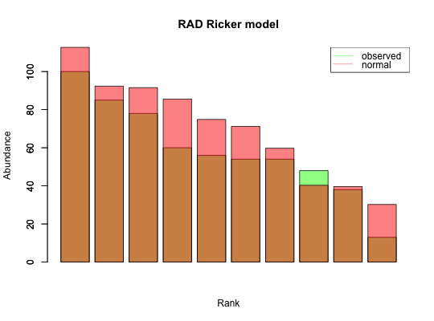
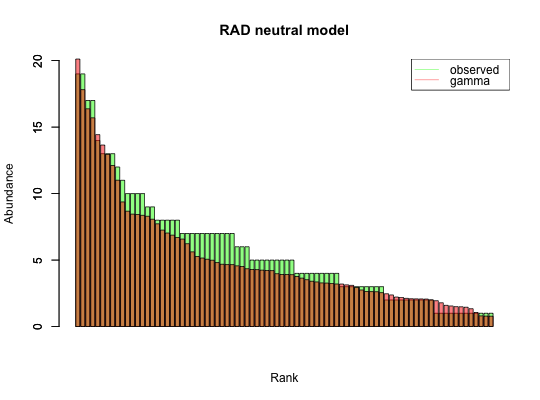

Given a community abundance matrix, compute the species abundance distribution as rank abundance curve.
rad(x, remove.zeros = TRUE, fit.rad = FALSE, fit.distrib = FALSE, fit.N = nrow(x), sample.index = NA, plot = TRUE, header = "")
| x | community matrix with species as rows, samples as columns and non-negative integers as entries |
|---|---|
| remove.zeros | if true, zeros in the species abundance distribution curve are discarded |
| fit.rad | (optional) fit different RAD models using vegan's radfit function. If selected, fit.distrib is ignored and if plot is true, vegan's plot function for RAD curves is used. |
| fit.distrib | (optional) select the best-fitting distribution for the RAD by comparing normal, lognormal, gamma, negative binomial and Poisson distribution using MASS function fitdistr |
| fit.N | (optional) number of samples drawn from the distribution to be fitted (defaults to the number of species in x after filtering of zeros) |
| sample.index | (optional) the sample index for which species abundance distribution, if not provided, the mean across samples is taken |
| plot | plot the RAD curve |
| header | add the header to the title of the plot |
the RAD is returned, if fit.rad or fit.distrib is true, the results of distribution fitting are also returned (distrib, score [log-likelihood for fit.distrib and AIC for fit.rad], params and fitted.rad)
Please provide species abundances as counts (scale and round if necessary). Note that for fit.rad, Null is the broken stick distribution.
#> [1] "Adjusting connectance to 0.02" #> [1] "Initial edge number 100" #> [1] "Initial connectance 1" #> [1] "Number of edges removed 89" #> [1] "Final connectance 0.0111111111111111" #> [1] "Final connectance: 0.0111111111111111"ts.ricker=round(ts.ricker*1000) # scale to integers rad.out.ricker=rad.fit.ricker=rad(ts.ricker, fit.distrib = TRUE, header="Ricker model")#> [1] "WARN: simpleWarning in densfun(x, parm[1], parm[2], ...): NaNs produced\n" #> [1] "Fitting of distribution negative binomial failed." #> [1] "WARN: simpleWarning in densfun(x, parm[1], parm[2], ...): NaNs produced\n" #> [1] "Fitting of distribution gamma failed." #> [1] "Selected distribution: normal" #> [1] "Fitting score: -45.1589874601144" #> [1] "Fitting parameters:" #> mean sd #> 67.50000 22.13256ts.hubbell=simHubbell(N = 100, M = 100, I = 500, d = 1, tskip=500, tend=1500) rad.out.hubbell=rad.fit.hubbell=rad(ts.hubbell, fit.distrib = TRUE, header="neutral model")#> [1] "Removing 16 species with zero abundance." #> [1] "Selected distribution: gamma" #> [1] "Fitting score: -223.137528894653" #> [1] "Fitting parameters:" #> shape rate #> 1.8122522 0.3164844